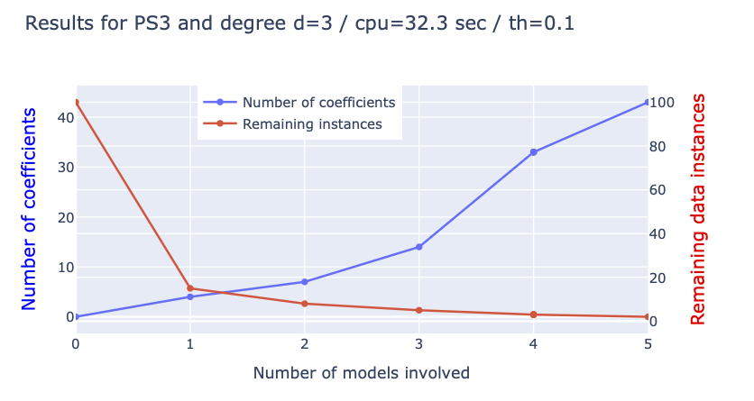

PwPol
API documentation
Recall that the objective of the pwpol module is the following:
Given a set of sensors \(s_j\), \(j=1,\dots,n_s\) and a target sensor \(s_i\), find a set of \(n_r\) polynomials \(P_\sigma\), \(\sigma=1,\dots,n_r\), such that the following residual: \[ e_i = \min_{\sigma=1}^{n_r}\Bigl\vert s_i-P_\sigma(\{s_j\}_{j\neq i})\Bigr\vert \tag{1}\] is small.
The principle is similar to the previously presented modules plars and g2sys, the main call needs a dictionary of arguments to be procided which is described in the following section.
1 The pwpol arguments dictionary
Here again, as the plars module lies in the heart of all the methods proposed in the Mizopol package, the dictionary unavoidably contains the entries of the plars dictionary and the plars fit dictionary. In particular, the following keys are present that have been already presented in the plars documentation:
deg,nModels,nModes,window,eps,etacoming from theplars’s instance dictionary.decoule,nfeats,compute_contributions,th_monomial, coming from theplarsfit dictionary.
Additional arguments are needed that are linked to the search for the piece-wise polynomial representations.
For the sake of completeness, all the parameters are included in the table below, the old as well as the new ones.
pwpol module args dictionary.
| Parameter | Type | Used for | Default |
|---|---|---|---|
deg |
int |
The degree of the polynomial to be identified | 1 |
window |
int |
number of samples per window (window width) | 200 |
nModels |
int |
Number of sampled window for alignement evaluation | 10 |
nModes |
int |
Number of selected monomials per window | 10 |
eps |
float |
precision for the final least squares solution | 5e-2 |
nBatch |
int |
Number of window used to determine monomials contributions | 25 |
eta |
float |
The quantile used to compute the error dataframe | 50 |
th_monomial |
float |
Threshold to keep a candidate monomial | 1e-4 |
decouple |
boolean |
Whether to avoid updating the coefficients of the previously selected modes when new ones are selected | False |
compute_contributions |
boolean |
Whether to compute the contributions of monomial for later displaying | False |
nfeats |
int |
Maximum number of sensors to to involve in the solution | None |
th |
float |
Initial value of the precision threshold used to admit a candidate polynomial during the search | 0.1 |
Nguess |
int |
The number of regions centers that are randomly sampled when searching for regions in the features space | 5 |
Niter |
int |
The number of solutions for the same centers to account for the randomness of the plars solutions |
5 |
ncoef_max |
int |
The maximum cumulative number of coefficients included in all the retained polynomials | 5000 |
expansion_rate |
float |
Expansion rate used to increase the precision threshold, initially at th after unsuccessful rounds |
1.2 |
ratio_untreated |
float |
Ratio of the dataset that can be left without being fitted by any polynomial | 0.01 |
dx |
float |
Initial size of the regions around the randomy sampled center in the space of normalized features. | 0.02 |
2 The fit method
2.1 Input arguments
fit method of the pwpol module.
| Parameter | Type | Used for | Default |
|---|---|---|---|
df |
pandas dataframe |
The dataframe used in the fit | user-defined |
colX |
list[str] |
The list of columns in df to be used as features |
user-defined |
coly |
str |
The column in df to be used as label |
user-defined |
args |
dict |
The arguments dictionary discussed in Section 1 | user-defined |
plot_conv |
bool |
If set to True a plotly figure is provided showing the convergence log of the solution |
False |
2.2 Returned arguments
fit method of the pwpol module.
| Parameter | Type | Description |
|---|---|---|
model |
dict |
Dictionary containing all the information defining the model (see below for a complete list) |
cpu |
tuple |
The tuple of local and distant computation times |
The following table enumerates all the fields contained in the returned model.
model dictionary returned by the fit method of the pwpol module.
| Parameter | Type | Description |
|---|---|---|
solutions |
list[dict] |
The list of plars solution representing the polynomials retained in the fitted piece-wise polynomial model |
centers |
list[list[float]] |
The matrix of centers, each row is a center of a region that was fitted by the polynomial having the same index in solutions |
rayons |
list[float] |
The list of radius of the region around the centers where the polynomial has been identified |
populations |
list[int] |
The list of integers representing the number of samples contained in the region of the same index |
dens |
list[float] |
The vector of normalizing coefficients applied to the columns of the training dataframe df used for the fit |
log |
dict |
The log dictionary containing some information regarding the fitting process |
colX |
list[str] |
The argument colX used in the fit (see Table 2) |
coly |
str |
The argument coly used in the fit (see Table 2) |
th |
float |
The argument th used in the fit (see Table 2) |
args |
dict |
The argument args used in the fit (see Table 2) |
deg |
int |
The argument deg used in the arguments dictionary (see Table 1) |
fig_conv |
plotly | None |
The convergence figure in case the parameter plot_conv of the call is set to True |
df_sensitivity |
pandas dataframe | None |
The sensitivity dataframe in case compute_contributions is set to True |
2.3 Fit example
from mizopol.pwpol_api import fit
df = pd.read_csv('datasets/Zema.csv', index_col=0).iloc[::5]
coly = 'PS3'
colX = [c for c in df.columns if c != coly]
args = dict(
th=0.05,
deg=3,
window=200,
compute_contributions=True,
th_monomial=1e-3,
)
model, (cpu1, cpu2) = fit(df=df[::10], colX=colX, coly=coly,
args=args, plot_conv=True)
# let us recover the solutions field fo the model
if 'fig_conv' in model:
model['fig_conv'].show()
print('\n')
print('arguments of the call:')
print(model['args'], '\n')
print('---------')
print('Sensitivity dataframe:')
print(model['df_sensitivity'], '\n')
print(f'cpu total = {cpu1:1.3} | cpu distance {cpu2:1.3} \n')
print('The list of keys:')
print(model.keys())Results:
Treated 0% | #rows= 5109 | #models = 0 | #coeffs = 0, | th=0.050
Treated 85% | #rows= 807 | #models = 1 | #coeffs = 4, | th=0.050
Treated 92% | #rows= 427 | #models = 2 | #coeffs = 7, | th=0.050
Treated 95% | #rows= 256 | #models = 3 | #coeffs = 14, | th=0.050
Treated 97% | #rows= 201 | #models = 4 | #coeffs = 33, | th=0.050
Treated 97% | #rows= 201 | #models = 4 | #coeffs = 33, | th=0.050
Treated 97% | #rows= 201 | #models = 4 | #coeffs = 33, | th=0.050
Treated 97% | #rows= 201 | #models = 4 | #coeffs = 33, | th=0.050
Treated 97% | #rows= 201 | #models = 4 | #coeffs = 33, | th=0.050
Treated 98% | #rows= 127 | #models = 5 | #coeffs = 43, | th=0.104
arguments of the call:
{'deg': 3, 'window': 200, 'nModes': 10, 'nModels': 10, 'eps': 0.05, 'nBatch': 25, 'eta': 95, 'dx': 0.02, 'th': 0.05, 'Niter': 5, 'Nguess': 5, 'ncoeff_max': 5000, 'ratio_untreated': 0.01, 'from_dataframe': True, 'th_monomial': 0.001, 'compute_contributions': True, 'decouple': False, 'nfeats': None, 'expansion_rate': 1.2, 'th_percentile': 99.0, 'colX': ['PS1', 'PS2', 'PS4', 'PS5', 'PS6', 'EPS1'], 'coly': 'PS3'}
---------
Sensitivity dataframe:
Contribution
PS2 0.347512
PS1 0.293670
EPS1 0.173660
PS5 0.094850
PS4 0.059131
PS6 0.027503
1 0.003675
cpu total = 32.8 | cpu distance 32.3
The list of keys:
dict_keys(['solutions', 'centers', 'rayons', 'populations', 'dens', 'log', 'colX', 'coly', 'th', 'args', 'deg', 'inds', 'cpu', 'fig_conv', 'df_sensitivity'])Notice also since we asked for the convergence plot, the execution of the previous script shows the following plotly figure

pwpol fitting call. Notice that the print th is the last one obtained during the fit and resulting from the expansion when necessary. The value of the initial th can be read inside the model['args'] field.3 The predict method
Once a model is obtained through the fit method, it can be used on a new dataframe to produce prediction. However:
pwpol model
As the model is implicit, the residual defined by Equation 1 can be computed only if the true label y is available. In the absence of the label, only the values of all the polynomials involved in the model can be computed and this does not deliver any residual as each of these value is legitimate candidate as value of the label.
3.1 The options dictionary
The availability of the label y is provided to the predict method through the options dictionary (that will be used as one of the input arguments of the predict method) that might be empty or showing one or both of the following fields:
options = None
options = {'y': y, 'n':5}
options = {'n': 5}
options = {'y': y}in which \(y\) is the true label contained in the dataframe. the n fields might be used to define the number of polynomials to be used. Indeed, as it has been shown in the results of the fit process above, it might happen (and it generally happens) that the last polynomials are used in order to handle a small amount of remaining samples making them not necessarily mandatory for a good fit. that is why the n field in the option dictionary has been introduced.
If the value is None (default value), no residual is computed and the prediction of all the polynomials involved in the model are computed in a matrix Ypred having as many columns as there are polynomials in the model.
3.2 The input arguments
Now that we introduced the option dictionary we can move on to present the input argument of the predict method.
predict method of the pwpol module.
| Parameter | Type | Description | Default |
|---|---|---|---|
df |
pandas dataframe |
The dataframe to be used in the prediction | user-defined |
model |
dict |
The pwpol model that is returned by the fit method |
user-defined |
options |
dict |
The options dictionary | None |
3.3 The returned arguments
predict method of the pwpol module.
| Parameter | Type | Description |
|---|---|---|
Ypred |
list[list[float]] |
The matrix of prediction by all the polynomials in the model |
ypred |
list[float] | None |
The predicted label in case the options['y'] is provided, else, None is returned |
dfe |
pandas dataframe | None |
The normalized percentile of error in case the options['y'] is provided, else, None is returned |
ind_polynomial |
list[int] | None |
The vector of index of the closest polynomial in case the options['y'] is provided, else, None is returned |
cpu |
tuple |
The tuple providing the local and the distant computation times. |
3.4 predict example
df = pd.read_csv('datasets/Zema.csv', index_col=0).iloc[::5]
coly = 'PS3'
colX = [c for c in df.columns if c != coly]
args = dict(th=0.1,deg=2,window=2000,compute_contributions=True,th_monomial=1e-3)
model, (_,_) = fit(df=df, colX=colX, coly=coly, args=args, plot_conv=False)
options = dict(y = df[coly].values)
#-----------------------------------------------------------------------------
Ypred, ypred, dfe, ind_polynomial, (cpu1, cpu2) = predict(df, model, options)
#-----------------------------------------------------------------------------
plot = True
if plot:
fig = go.Figure()
t = np.linspace(0,1, len(ypred))
fig.add_trace(go.Scatter(x=t, y=ypred, name='predicted'))
fig.add_trace(go.Scatter(x=t, y=options['y'], name='true'))
fig.show()
print('percentiles of errors \n', dfe)
print(f"cpu all {cpu1:1.3} | cpu distant {cpu2:1.3}")
print('log')
print('------')
for key, value in model['log'].items():
print(key, value)
print('------')
print('cardinalities: ', [sol['card'] for sol in model['solutions']])
print('------')
print('Thresholds \n', 'initial = ', model['args']['th'], '| final = ', model['th'])
print('colX = ', model['colX'])Results:
Treated 0% | #rows= 51084 | #models = 0 | #coeffs = 0, | th=0.100
Treated 96% | #rows= 2077 | #models = 1 | #coeffs = 10, | th=0.100
Treated 96% | #rows= 2077 | #models = 1 | #coeffs = 10, | th=0.100
Treated 97% | #rows= 1535 | #models = 2 | #coeffs = 17, | th=0.120
percentiles of errors
Error
50% 0.018472
80% 0.043386
90% 0.059735
95% 0.076548
98% 0.124325
99% 0.207965
100% 1.419767
cpu all 2.44 | cpu distant 0.14
log
------
remain [100, 4, 4, 3]
nb_models [0, 1, 1, 2]
nb_coeff [0, 10, 10, 17]
cpu 87.91623163223267
------
cardinalities: [10, 7]
------
Thresholds
initial = 0.1 | final = 0.12
colX = ['PS1', 'PS2', 'PS4', 'PS5', 'PS6', 'EPS1']